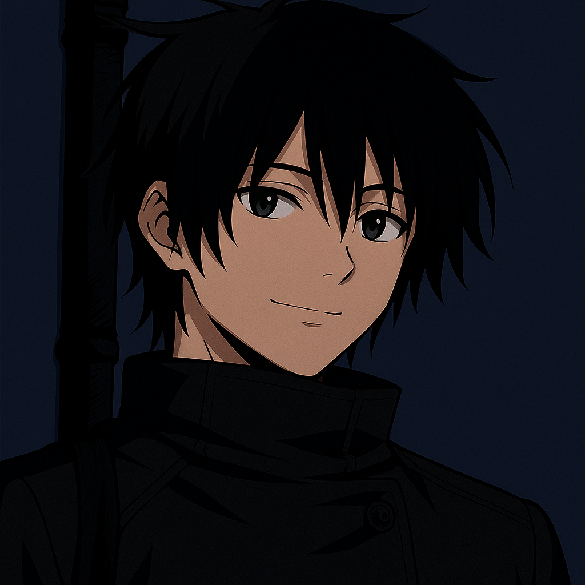

Atributos
Força
14
Destreza
16
Constituição
14
Inteligência
10
Sabedoria
18
Carisma
8
PEA
15
Habilidades & Técnicas
Copiar Técnica
- Custo: 3 PEA
- Ação Necessária: 1 Ação
- Alcance: 9 m
- Efeito: Copia uma técnica amaldiçoada de inimigo ou aliado observado ou tocado.
- Duração: 1 rodada + bônus de nível de Okkotsu
- Teste de Controle de Energia: CD = 10 + nível do alvo (falha = técnica falha)
- Combo Hook: Técnica copiada pode ser usada imediatamente em combo com ações de Okkotsu ou Rika. Se usada após Flash Negro, ganha +1dX extra e pode estender combos acumulativos.
Reforço Corporal
- Custo PEA: 1
- Ação: Bônus
- Efeito: Adiciona +d4 ao dano ou à CA/resistência contra o próximo ataque físico recebido.
- Especial: Combo Hook — se o reforço for usado em ataque e o alvo cair a 0 PV, você pode gastar 1 PEA adicional para fazer outro ataque como reação.
Prisão Amaldiçoada
- Custo PEA: 3
- Ação: Principal
- Efeito: Um inimigo fica preso no lugar até o fim do próximo turno. Ele pode tentar escapar com teste de Força ou Destreza contra sua CD de energia amaldiçoada.
- Alcance: 10 pés
- Combo Hook: Se o inimigo não conseguir escapar, qualquer ataque ou habilidade usada contra ele ganha +1dX de dano ou outro efeito secundário escolhido (ex.: empurrar, derrubar).
Golpe da Sombra
- Custo PEA: 2
- Ação: Principal
- Efeito: O inimigo sofre desvantagem em testes de resistência de Sabedoria até o próximo turno.
- Dano: 2dX + mod. do atributo de energia
- Combo Hook: Se o alvo já estiver com desvantagem ou marcado (ex: Visão da Energia ou Prisão Amaldiçoada), você pode gastar 1 PEA extra para reforçar o efeito, fazendo com que o próximo ataque que você ou aliados fizerem contra ele ignore resistências.
Flash Negro
- Custo PEA: 1
- Ação: Principal
- Efeito: Corpo a corpo ou à distância (dependendo do estilo do personagem).
- Descrição: O Flash Negro é um ataque devastador que sincroniza energia amaldiçoada com impacto físico, distorcendo o espaço-tempo no ponto de contato. Cada acerto bem-sucedido prepara o terreno para combos consecutivos, aumentando o dano e a vantagem estratégica do usuário.
- Teste: Faça um Teste de Controle de Energia Amaldiçoada, CD = 15 + nível do inimigo.
-
Resultados:
- Falha leve (até 4 abaixo): ataque normal, sofre fadiga (-1 em Ataque e CA até o próximo turno).
- Falha grave (5+ abaixo): ataque normal, sofre retrocesso (3dX de dano + desvantagem no próximo ataque).
- Sucesso: +1 dado de dano.
- Sucesso extremo (5+ acima): dano dobrado, recupera 1 PEA, +1 dado acumulativo para o próximo ataque e +2 em Ataque até o próximo turno. - Acúmulo: Cada Flash Negro consecutivo bem-sucedido acumula +2 dados extras de dano, até o primeiro ataque falho.
- Overcharge: Gaste 2 PEA adicionais para atingir todos os inimigos adjacentes ao alvo primário (metade do dano).
- Combo Hook: Se usado após magias ou técnicas que marquem o alvo (como Visão da Energia ou Prisão Amaldiçoada), cada Flash Negro bem-sucedido ganha +1 dado extra e ignora resistências.